93,319
原始成功采集轨迹
深圳 R23 · 数据发版报告
本页面由本次冻结数据、最终编码统计和交付清单生成。
最终交付根目录（CPFS 内部路径，可点击复制）：/cpfs-normal/xuyuan/data-workspace/shenzhen-r23-20261028/encoded/v4-macro-k256
本批冻结训练数据可用于离线监督接入和编码复现。质检规则覆盖 93,319 条，正式QC视觉复核记录覆盖 66 条；另对 12 个报告样例查看了首/中/末共 36 张真实帧和NavMesh路线图，严重视觉错误确认数 0。两类复核范围不同；抽帧不能解释为全视频逐像素解码或证明所有帧均完好。
保留集包含对象目标 78,811 条、区域目标 1,664 条。停止距离采用各任务的目标注释 AABB，按 Habitat 到 NWU 变换后计算；并非独立视觉语义重标，也不证明目标逐帧可见或无遮挡。最大近黑连片为 5.51%（10%硬错误阈值），未达到阈值；本批没有近黑连片过滤命中，也没有确认严重缺面样例。统计抽样保留与过滤类别中明确缺失项：近黑连片过滤：本批没有符合条件的实际命中；未构造该类别。；确认严重缺面过滤：本批没有符合条件的实际命中；未构造该类别。。
筛选口径：分数保留两位后按 ≥7.0 比较；硬错误封顶并过滤；未排除 suspicious 过滤，review 单独记录。末段与最后 3 秒转向抵消角采用“sum(abs(turn))-abs(sum(turn)) = 2*min(positive,negative)”。规则命中可重叠，不能直接相加。成功合并跳帧作为监督粒度变化单列，不计为删除轨迹。
本版K256已与RVQ-H5共用真实宏节点。合并跳过原始帧 1,701,277 个，保留真实首末帧；全部 5,086,945 个GT及解码运动动作，按位移≤10cm且转角≤10°检查，细碎残留均为0。末端最后一个运动动作由原始 56,380 条细碎尾段降至0条；停止监督独立保留。完整检查与误差代价见编码专题。
| 数据组 | split | 原始完成 | QC其他过滤 | 重复路线排除 | QC保留 | 未解GT | K256轨迹 | K256样本 | 未解RVQ | RVQ轨迹 | RVQ节点 | 成功跳过帧* |
|---|---|---|---|---|---|---|---|---|---|---|---|---|
| shenzhen_office_r23_k3_bin1_20261028 | train | 1,970 | 207 | 1,760 | 3 | 0 | 3 | 122 | 0 | 3 | 122 | 40 |
| shenzhen_office_r23_k3_bin1_pair600_20261028 | train | 91,346 | 10,874 | 0 | 80,472 | 0 | 80,472 | 5,167,298 | 0 | 80,472 | 5,167,298 | 1,701,237 |
| shenzhen_r23_smoke_20261028 | train | 3 | 0 | 3 | 0 | 0 | 0 | 0 | 0 | 0 | 0 | 0 |
互斥 QC 分母关系为原始完成 = QC其他过滤 + 重复路线排除 + QC保留；QC_filtered 原始字段包含重复路线排除，表中已拆分以免重复相加。下游 unresolved 和编码数量是后续阶段，不与QC排除项相加。成功合并跳过帧是监督节点变化，不计为删除轨迹。失败采集不进入该QC保留率分母。
| 主原因 | 轨迹数 | 说明 |
|---|---|---|
| duplicate_train_identity_or_full_trajectory | 1,763 | 互斥总账以数据流转表为准 |
| extended_turn_gt_95 | 7,964 | 互斥总账以数据流转表为准 |
| extended_reversal_gt_10 | 1,235 | 互斥总账以数据流转表为准 |
| suspicious/contrast_lt_7 | 1,817 | 互斥总账以数据流转表为准 |
| quality_score<7.0 | 65 | 互斥总账以数据流转表为准 |
| retained | 80,475 | 互斥总账以数据流转表为准 |
冻结保留集路线长度 P50/P95 为 25.55/65.88 m；终点到目标注释水平 AABB 距离 P50/P95 为 0.93/1.00 m。原始帧间速度 P50/P95 为 0.48/1.96 m/s，原始动作数 P50/P95 为 78/165。NavMesh覆盖从 99.52% 变为 99.51%；冻结筛选后网格覆盖损失 2 个 cell。同一 80,475 条轨迹的全程开环终点位置误差均值为 K256 0.59 m、RVQ-H5 0.30 m，此误差比较只说明离线重建结果，不代表导航策略成功率。高重复占用率描述路线对网格的重访，不等同于无效数据。
{
"missingness": {
"path_length_m": {
"n": 80475,
"missing": 0
},
"action_count": {
"n": 80475,
"missing": 0
},
"quality_score": {
"n": 80475,
"missing": 0
},
"stop_to_goal_aabb_distance_m": {
"n": 80475,
"missing": 0
},
"raw_frame_speed_mps": {
"n": 6788222,
"missing": 0
},
"path_mean_speed_mps": {
"n": 80475,
"missing": 0
},
"frame_speed_cv": {
"n": 80475,
"missing": 0
},
"camera_angle_deg": {
"n": 4739343,
"missing": 0
},
"body_angle_deg": {
"n": 4739343,
"missing": 0
},
"extended_terminal_turn_deg": {
"n": 80475,
"missing": 0
},
"last2_net_turn_deg": {
"n": 80475,
"missing": 0
},
"extended_reversal_deg": {
"n": 80475,
"missing": 0
},
"last3_reversal_deg": {
"n": 80475,
"missing": 0
},
"max_black_component_px": {
"n": 80475,
"missing": 0
},
"goal_category": {
"n": 80475,
"missing": 0
},
"height_change_m": {
"n": 80475,
"missing": 0
},
"tortuosity": {
"n": 80475,
"missing": 0
},
"clearance_m": {
"n": 80475,
"missing": 0
}
}
}以下分布默认只统计本次冻结 QC 保留集；统计层级、分箱、样本量、缺失数与 P50/P95 随每张图标注。
NWU 水平面 XY 相邻观测点欧氏距离之和；数组 NPZ 重算。
raw_frames−1；使用原始相邻观测，不按RVQ合并后节点计数。
冻结保留记录中的本次完整评分，保留两位小数后按阈值比较。
将 Habitat XYZ 目标注释 AABB（含 object 与 region 目标）按 NWU=[−Z,−X,Y] 变换到 NWU XY 后，计算真实终点到水平矩形最近点的欧氏距离；非中心距离、非3D网格表面距离、非成功半径。
每段水平位移/真实 timestamps_sec 间隔；含静止段。
水平路径长度/(末帧−首帧真实时间)。
单条轨迹各原始帧间水平速度的总体标准差/均值；直接复用冻结QC字段。
移动段全局 XY 切向与 body yaw + Habitat 相机安装光轴 yaw 的最短夹角绝对值；speed≥0.05m/s；按区间等权。
移动段全局 XY 切向与 pose yaw 前向的最短夹角绝对值；speed≥0.05m/s；按区间等权。
冻结QC定义：末段窗口=max(最后2秒,最后1m)，yaw增量按真实时间裁切后累计绝对角。
最后2秒真实时间窗口内累计有符号yaw转角绝对值；窗口边界按真实时间裁切。
末段窗口中 2×min(正向累计角,负向累计角绝对值)，反映双向转动抵消。
独立最后3秒窗口中 2×min(正向累计角,负向累计角绝对值)。
冻结视频采样记录的最大连通近黑比例×64×36；不是全帧全视频统计。
冻结记录 goal.canonical_category；缺失类别单独统计。
数组 poses 的 NWU z 最大值−最小值；不等同于楼层数。
水平路线长度/首末点水平直线距离；静止轨迹记为缺失。
sidecar clearances_m 的最小值；仅对有可读真实sidecar的路线统计。
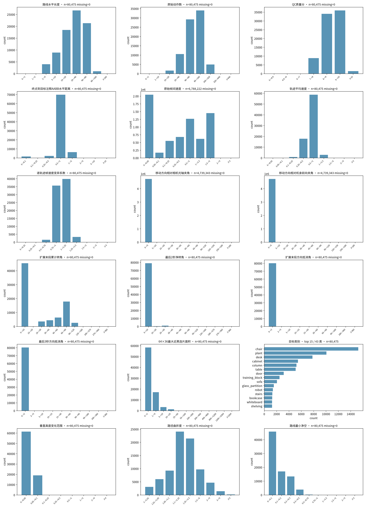
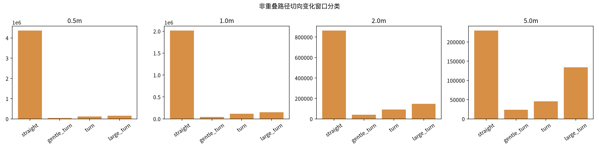
窗口按真实路径累计行进距离构造；按定义互不重叠，边界拐角归到后一窗口；末尾不足窗口的余段丢弃并计数。窗口数不是轨迹数。
| 行进长度 | 窗口数 | 直行 | 缓弯 | 转弯 | 大转 | 窗口定义 |
|---|---|---|---|---|---|---|
| 0.5m m | 4,694,494 | 4,370,087 | 47,817 | 122,428 | 154,162 | 将 XY 路径切为互不重叠的固定弧长窗口；窗口端点落在相邻真实路径段内时按弧长线性插值。在窗口内部累计相邻路径切向的最短角差绝对值；不使用body yaw。窗口为左闭右开，恰在边界的拐角只计入后一窗口。分类：<10°直行，10–<30°缓弯，30–<60°转弯，≥60°大转。每条路线不足一个完整窗口的余段丢弃并计数；窗口不重叠。 |
| 1.0m m | 2,327,427 | 2,016,236 | 45,898 | 115,540 | 149,753 | 将 XY 路径切为互不重叠的固定弧长窗口；窗口端点落在相邻真实路径段内时按弧长线性插值。在窗口内部累计相邻路径切向的最短角差绝对值；不使用body yaw。窗口为左闭右开，恰在边界的拐角只计入后一窗口。分类：<10°直行，10–<30°缓弯，30–<60°转弯，≥60°大转。每条路线不足一个完整窗口的余段丢弃并计数；窗口不重叠。 |
| 2.0m m | 1,143,266 | 864,937 | 39,609 | 92,086 | 146,634 | 将 XY 路径切为互不重叠的固定弧长窗口；窗口端点落在相邻真实路径段内时按弧长线性插值。在窗口内部累计相邻路径切向的最短角差绝对值；不使用body yaw。窗口为左闭右开，恰在边界的拐角只计入后一窗口。分类：<10°直行，10–<30°缓弯，30–<60°转弯，≥60°大转。每条路线不足一个完整窗口的余段丢弃并计数；窗口不重叠。 |
| 5.0m m | 432,956 | 229,888 | 23,736 | 45,423 | 133,909 | 将 XY 路径切为互不重叠的固定弧长窗口；窗口端点落在相邻真实路径段内时按弧长线性插值。在窗口内部累计相邻路径切向的最短角差绝对值；不使用body yaw。窗口为左闭右开，恰在边界的拐角只计入后一窗口。分类：<10°直行，10–<30°缓弯，30–<60°转弯，≥60°大转。每条路线不足一个完整窗口的余段丢弃并计数；窗口不重叠。 |
覆盖按高度分层的 0.25 m NavMesh网格估算，轨迹点按 0.50 m 水平邻域计入；聚合方式 scene_equal_weight，随机增长排序种子 [20261104, 20261105, 20261106]。
网格覆盖是面积估计，不是连续几何面积；分母仅为本次实际覆盖的场景，不代表整个素材库。走廊重复经过不等于无效重复，多楼层俯视重叠不代表穿墙；近似重复路线不会仅凭候选状态删除。
| 场景 | 保留路线 | NavMesh面积 m² | 筛前覆盖率 | 筛后覆盖率 | 重复占用网格率 | 点不可映射率 | 筛除路线 |
|---|---|---|---|---|---|---|---|
| /cpfs-normal/xuyuan/EasyVLNCE-office-tight-boxes-20260928/artifacts/office_shelf_fix_v9_20260929/native/shenzhen/data/scene_datasets/custom/shenzhen_office_v9_semantic/shenzhen_office_v9_semantic.glb | 80,475 | 1,277.94 | 99.5 | 99.5 | 99.9 | 0.00 | 12,844 |
| 路线总体 | 已用路线比例 | 路线数 | 覆盖网格 | 覆盖率 | 随机种子 |
|---|---|---|---|---|---|
| all_completed | 0.1 | 9,332 | 20,157 | 98.58 | 20261104 |
| all_completed | 0.25 | 23,330 | 20,287 | 99.22 | 20261104 |
| all_completed | 0.5 | 46,660 | 20,304 | 99.30 | 20261104 |
| all_completed | 0.75 | 69,990 | 20,311 | 99.33 | 20261104 |
| all_completed | 1.0 | 93,319 | 20,349 | 99.52 | 20261104 |
| all_completed | 0.1 | 9,332 | 20,126 | 98.43 | 20261105 |
| all_completed | 0.25 | 23,330 | 20,269 | 99.13 | 20261105 |
| all_completed | 0.5 | 46,660 | 20,306 | 99.31 | 20261105 |
| all_completed | 0.75 | 69,990 | 20,345 | 99.50 | 20261105 |
| all_completed | 1.0 | 93,319 | 20,349 | 99.52 | 20261105 |
| all_completed | 0.1 | 9,332 | 20,167 | 98.63 | 20261106 |
| all_completed | 0.25 | 23,330 | 20,276 | 99.16 | 20261106 |
| all_completed | 0.5 | 46,660 | 20,341 | 99.48 | 20261106 |
| all_completed | 0.75 | 69,990 | 20,347 | 99.51 | 20261106 |
| all_completed | 1.0 | 93,319 | 20,349 | 99.52 | 20261106 |
| qc_retained | 0.1 | 8,048 | 20,162 | 98.61 | 20261104 |
| qc_retained | 0.25 | 20,119 | 20,309 | 99.33 | 20261104 |
| qc_retained | 0.5 | 40,238 | 20,333 | 99.44 | 20261104 |
| qc_retained | 0.75 | 60,357 | 20,341 | 99.48 | 20261104 |
| qc_retained | 1.0 | 80,475 | 20,347 | 99.51 | 20261104 |
| qc_retained | 0.1 | 8,048 | 20,128 | 98.44 | 20261105 |
| qc_retained | 0.25 | 20,119 | 20,284 | 99.20 | 20261105 |
| qc_retained | 0.5 | 40,238 | 20,336 | 99.46 | 20261105 |
| qc_retained | 0.75 | 60,357 | 20,342 | 99.49 | 20261105 |
| qc_retained | 1.0 | 80,475 | 20,347 | 99.51 | 20261105 |
| qc_retained | 0.1 | 8,048 | 20,085 | 98.23 | 20261106 |
| qc_retained | 0.25 | 20,119 | 20,297 | 99.27 | 20261106 |
| qc_retained | 0.5 | 40,238 | 20,338 | 99.47 | 20261106 |
| qc_retained | 0.75 | 60,357 | 20,344 | 99.50 | 20261106 |
| qc_retained | 1.0 | 80,475 | 20,347 | 99.51 | 20261106 |
NavMesh绕行复核样例 shenzhen_office__shenzhen_office_v9_semantic__semantic_3b3d9307：直线 2.39 m，PathFinder 最短可行路径 9.11 m，记录路线 9.96 m；实走/最短路=1.09。这是单条解释性样例，不是全局效率指标。
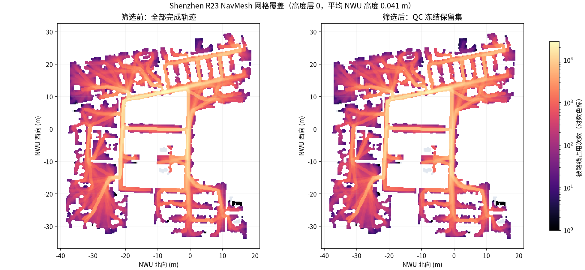
NavMesh 网格底图按每个0.25m高度层分别统计多条路线占用数；筛选前为所有完成轨迹，筛选后为冻结QC保留集。
冻结保留集统计分位数/规则边界优先，完整轨迹去重。目标距离远例为固定排序间隔候选池选择，非全局极值。
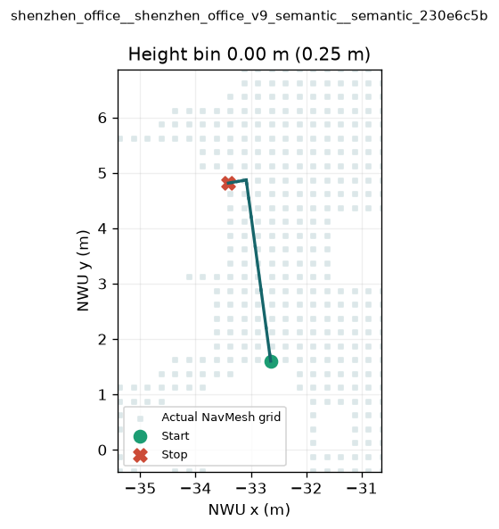
状态 retained · 质量分 7.00 · 路程 3.63 m · 时长 11.50 s · 命中 extended_turn_gt_75, stationary_and_cv_high
无硬错误及未排除可疑项，分数达到7分；按保留集最低分选择。
楼层处理：按NWU高度0.25m分箱分图；高度箱变化的相邻点不直接连线。真实NavMesh网格为底图，坐标单位米；不是轨迹包围盒。
原视频路径：/data/pool/user-cache/xuyuan/shenzhen-r23-release-20261104/source/runs/output/shenzhen_office_r23_k3_bin1_pair600_20261028/videos/train/shenzhen_office_v9_semantic/shenzhen_office__shenzhen_office_v9_semantic__semantic_230e6c5b/3973da5e238a4aadba6336a9d51151a1/rgb.mp4
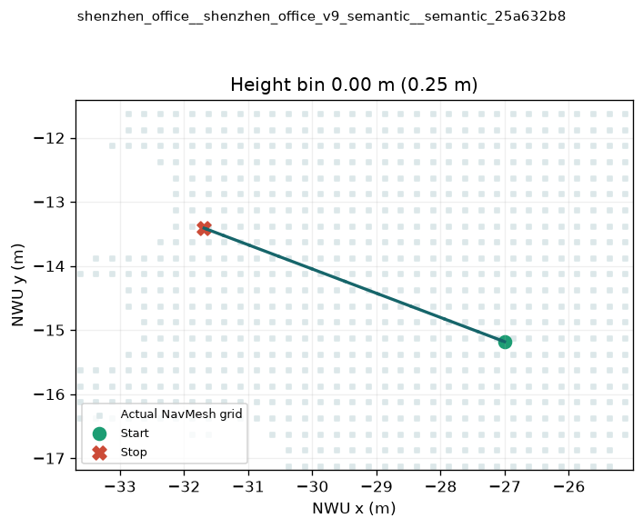
状态 retained · 质量分 9.71 · 路程 5.01 m · 时长 8.00 s · 命中 无
按保留集路线长度P5附近选择，每例来自不同轨迹。
楼层处理：按NWU高度0.25m分箱分图；高度箱变化的相邻点不直接连线。真实NavMesh网格为底图，坐标单位米；不是轨迹包围盒。
原视频路径：/data/pool/user-cache/xuyuan/shenzhen-r23-release-20261104/source/runs/output/shenzhen_office_r23_k3_bin1_pair600_20261028/videos/train/shenzhen_office_v9_semantic/shenzhen_office__shenzhen_office_v9_semantic__semantic_25a632b8/89d1230a6cc14c328e19568c21be639f/rgb.mp4
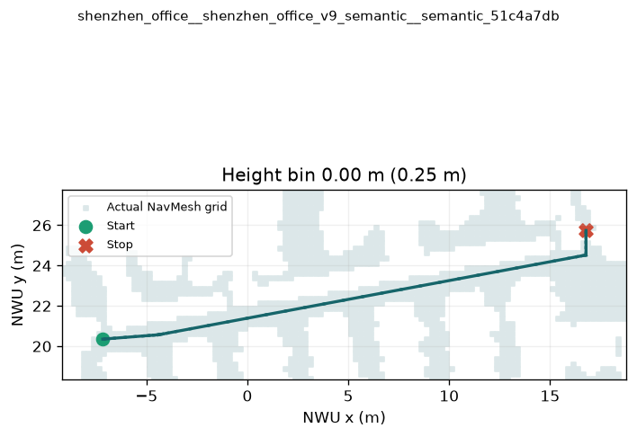
状态 retained · 质量分 9.97 · 路程 25.55 m · 时长 27.50 s · 命中 无
按保留集路线长度P50附近选择，每例来自不同轨迹。
楼层处理：按NWU高度0.25m分箱分图；高度箱变化的相邻点不直接连线。真实NavMesh网格为底图，坐标单位米；不是轨迹包围盒。
原视频路径：/data/pool/user-cache/xuyuan/shenzhen-r23-release-20261104/source/runs/output/shenzhen_office_r23_k3_bin1_pair600_20261028/videos/train/shenzhen_office_v9_semantic/shenzhen_office__shenzhen_office_v9_semantic__semantic_51c4a7db/42db48f923c34d4094e830e8cd471e4b/rgb.mp4
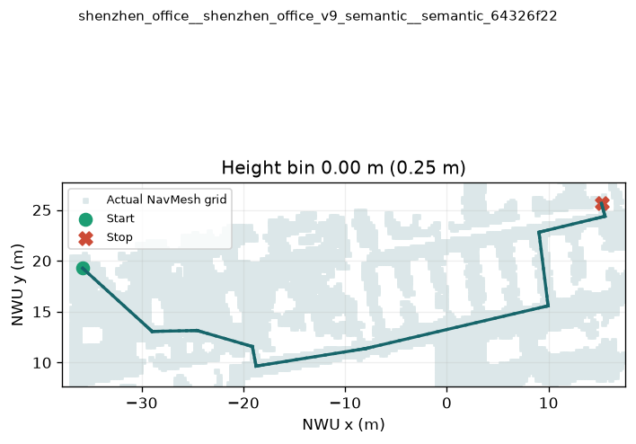
状态 retained · 质量分 9.78 · 路程 65.88 m · 时长 84.50 s · 命中 无
按保留集路线长度P95附近选择，每例来自不同轨迹。
楼层处理：按NWU高度0.25m分箱分图；高度箱变化的相邻点不直接连线。真实NavMesh网格为底图，坐标单位米；不是轨迹包围盒。
原视频路径：/data/pool/user-cache/xuyuan/shenzhen-r23-release-20261104/source/runs/output/shenzhen_office_r23_k3_bin1_pair600_20261028/videos/train/shenzhen_office_v9_semantic/shenzhen_office__shenzhen_office_v9_semantic__semantic_64326f22/971cac602d684fb5a46a285e701ec8f5/rgb.mp4
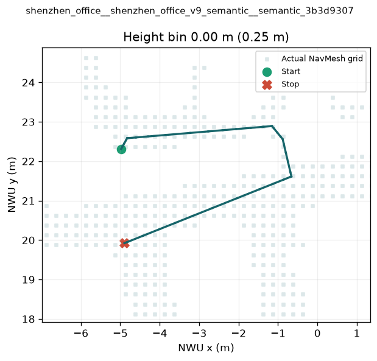
状态 retained · 质量分 8.89 · 路程 9.96 m · 时长 28.00 s · 命中 short_tortuous_route, stationary_and_cv_high
直线距离2.39m；实际NavMesh最短可行路程9.11m；本轨迹9.96m，比最短可行路径长9.3%。地图与实际画面显示绕行办公家具，不能仅凭直线比删除。
楼层处理：按NWU高度0.25m分箱分图；高度箱变化的相邻点不直接连线。真实NavMesh网格为底图，坐标单位米；不是轨迹包围盒。
原视频路径：/data/pool/user-cache/xuyuan/shenzhen-r23-release-20261104/source/runs/output/shenzhen_office_r23_k3_bin1_pair600_20261028/videos/train/shenzhen_office_v9_semantic/shenzhen_office__shenzhen_office_v9_semantic__semantic_3b3d9307/e50f82c105664afe840760eec127c3be/rgb.mp4
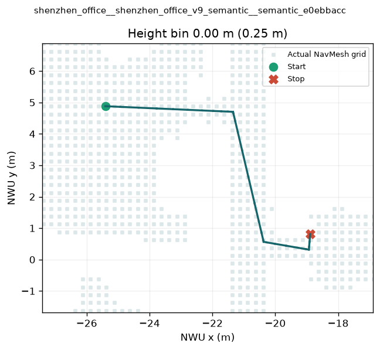
状态 retained · 质量分 7.34 · 路程 10.27 m · 时长 25.00 s · 命中 extended_turn_gt_75, stationary_and_cv_high
按保留集扩展末段累计绝对转角最大值选择；未超过95°硬阈值。
楼层处理：按NWU高度0.25m分箱分图；高度箱变化的相邻点不直接连线。真实NavMesh网格为底图，坐标单位米；不是轨迹包围盒。
原视频路径：/data/pool/user-cache/xuyuan/shenzhen-r23-release-20261104/source/runs/output/shenzhen_office_r23_k3_bin1_pair600_20261028/videos/train/shenzhen_office_v9_semantic/shenzhen_office__shenzhen_office_v9_semantic__semantic_e0ebbacc/c37bb8d626f440efa569660b30322d42/rgb.mp4
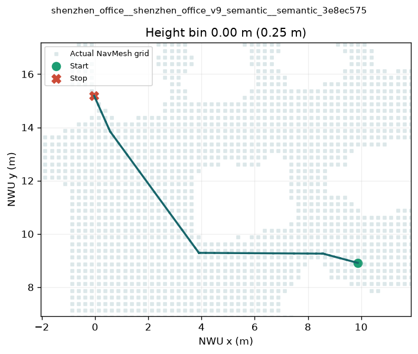
状态 retained · 质量分 8.74 · 路程 13.13 m · 时长 25.00 s · 命中 stationary_and_cv_high
按固定排序每约80条取1条的候选池中，终点到目标AABB水平最近距离最大者选择；不是保留集全局最大。
楼层处理：按NWU高度0.25m分箱分图；高度箱变化的相邻点不直接连线。真实NavMesh网格为底图，坐标单位米；不是轨迹包围盒。
原视频路径：/data/pool/user-cache/xuyuan/shenzhen-r23-release-20261104/source/runs/output/shenzhen_office_r23_k3_bin1_pair600_20261028/videos/train/shenzhen_office_v9_semantic/shenzhen_office__shenzhen_office_v9_semantic__semantic_3e8ec575/c77e723ea251429d87f2b67013f28af7/rgb.mp4
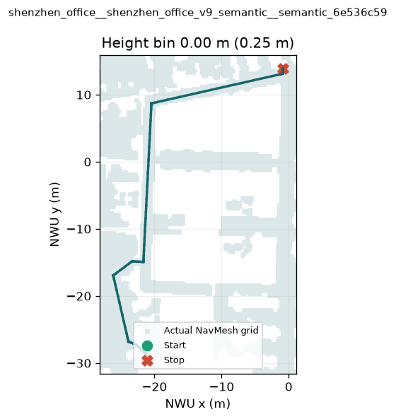
状态 retained · 质量分 8.26 · 路程 64.06 m · 时长 80.00 s · 命中 extended_turn_gt_75
实际首中末抽帧最大近黑连片为5.51%，距离10%硬阈值仍有差距；本批无近黑硬过滤案例。
楼层处理：按NWU高度0.25m分箱分图；高度箱变化的相邻点不直接连线。真实NavMesh网格为底图，坐标单位米；不是轨迹包围盒。
原视频路径：/data/pool/user-cache/xuyuan/shenzhen-r23-release-20261104/source/runs/output/shenzhen_office_r23_k3_bin1_pair600_20261028/videos/train/shenzhen_office_v9_semantic/shenzhen_office__shenzhen_office_v9_semantic__semantic_6e536c59/2616d3f78ed5489786920a075bcd5a9b/rgb.mp4
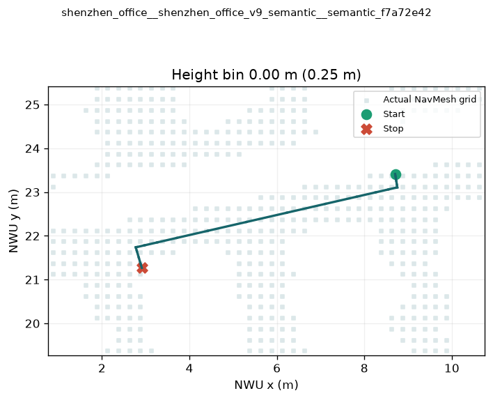
状态 filtered · 质量分 6.99 · 路程 6.93 m · 时长 17.50 s · 命中 extended_turn_gt_75, stationary_and_cv_high
按无硬错误/未排除可疑项、仅分数不足7的最高分选择。
楼层处理：按NWU高度0.25m分箱分图；高度箱变化的相邻点不直接连线。真实NavMesh网格为底图，坐标单位米；不是轨迹包围盒。
原视频路径：/data/pool/user-cache/xuyuan/shenzhen-r23-release-20261104/source/runs/output/shenzhen_office_r23_k3_bin1_pair600_20261028/videos/train/shenzhen_office_v9_semantic/shenzhen_office__shenzhen_office_v9_semantic__semantic_f7a72e42/76f450a6cb714ced9b0c9aa2499af6cd/rgb.mp4
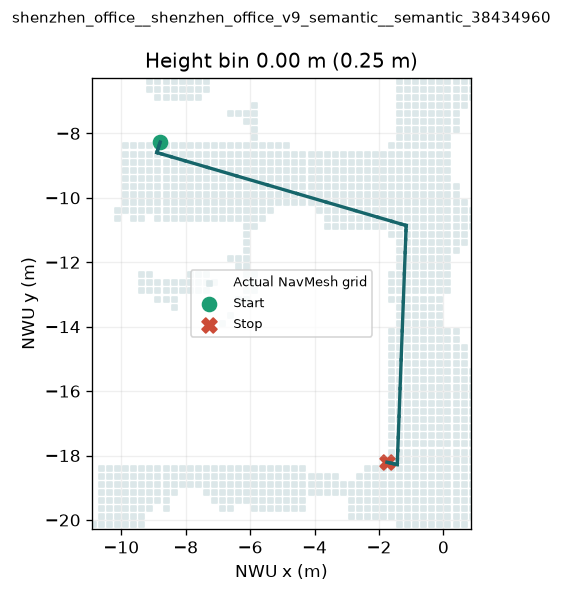
状态 filtered · 质量分 4.90 · 路程 16.16 m · 时长 29.50 s · 命中 extended_reversal_gt_10, extended_turn_gt_95, extended_reversal_gt_5, extended_turn_gt_75, stationary_and_cv_high
抵消角=累计绝对转角−绝对净转角=2×min(正向累计,负向累计绝对值)，超过10°硬过滤。
楼层处理：按NWU高度0.25m分箱分图；高度箱变化的相邻点不直接连线。真实NavMesh网格为底图，坐标单位米；不是轨迹包围盒。
原视频路径：/data/pool/user-cache/xuyuan/shenzhen-r23-release-20261104/source/runs/output/shenzhen_office_r23_k3_bin1_pair600_20261028/videos/train/shenzhen_office_v9_semantic/shenzhen_office__shenzhen_office_v9_semantic__semantic_38434960/bedb20a689f04071927a5648f2e0e58f/rgb.mp4
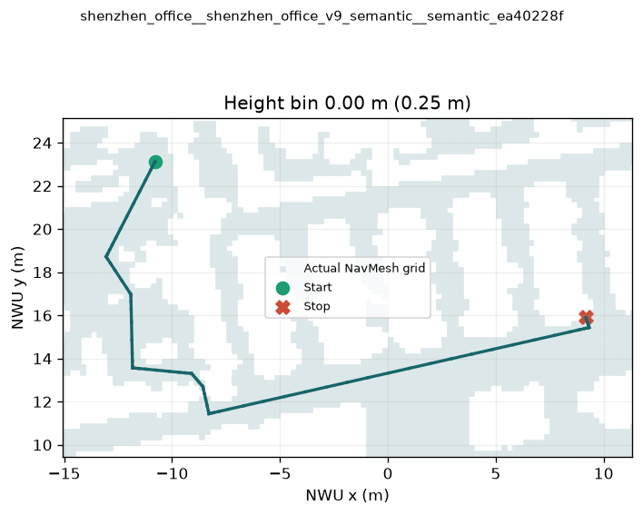
状态 filtered · 质量分 4.90 · 路程 33.85 m · 时长 57.00 s · 命中 extended_turn_gt_95, extended_turn_gt_75, stationary_and_cv_high
扩展末段累计绝对转角超过95°硬过滤。
楼层处理：按NWU高度0.25m分箱分图；高度箱变化的相邻点不直接连线。真实NavMesh网格为底图，坐标单位米；不是轨迹包围盒。
原视频路径：/data/pool/user-cache/xuyuan/shenzhen-r23-release-20261104/source/runs/output/shenzhen_office_r23_k3_bin1_pair600_20261028/videos/train/shenzhen_office_v9_semantic/shenzhen_office__shenzhen_office_v9_semantic__semantic_ea40228f/e6b3c4fc67324280b92050bc2a344c7b/rgb.mp4
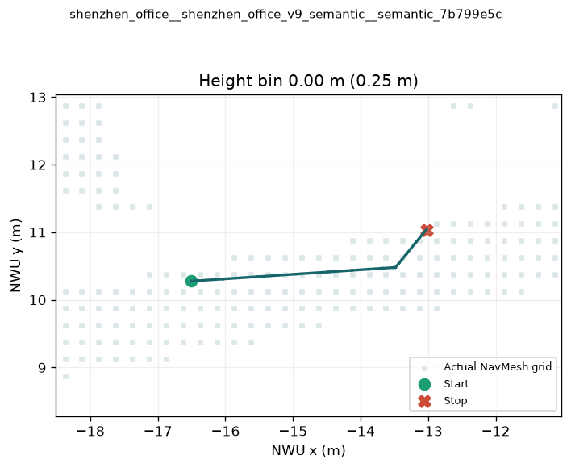
状态 filtered · 质量分 8.30 · 路程 3.75 m · 时长 12.00 s · 命中 contrast_lt_7, stationary_and_cv_high
抽帧最低亮度标准差小于7，尚未通过针对性视觉证据排除；不等同确认缺面。
楼层处理：按NWU高度0.25m分箱分图；高度箱变化的相邻点不直接连线。真实NavMesh网格为底图，坐标单位米；不是轨迹包围盒。
原视频路径：/data/pool/user-cache/xuyuan/shenzhen-r23-release-20261104/source/runs/output/shenzhen_office_r23_k3_bin1_pair600_20261028/videos/train/shenzhen_office_v9_semantic/shenzhen_office__shenzhen_office_v9_semantic__semantic_7b799e5c/a1d1a17e0c26473aaf1cab0c8923b076/rgb.mp4